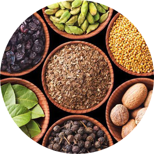
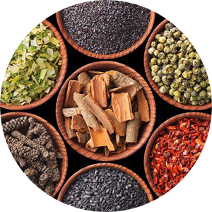
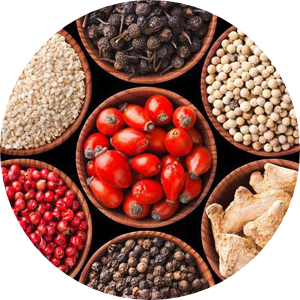
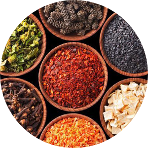

Пряности являются продуктами растительного происхождения, которые обладают сильным пряным ароматом и часто резким, жгучим вкусом. Они улучшают вкусовые достоинства пищи и способствуют её освоению, так как являются катализаторами многих ферментативных процессов и активизируют обмен веществ в целом. Прчностям принадлежи большая роль в выведении из оргагизма шлаков и повышении защитных функций организма. Последнее объясняется тем, что они проявляют бактерицидные и антикислительные свойства. Этим же объясняется их консервирующее действие при добавлении к пищевым продуктам. Некоторые пряности и их компоненты проявляют лечебные свойства, и их используют для приготовления различных лекарств.
Классификация
Классические

Экзотические

Местные

Смеси
